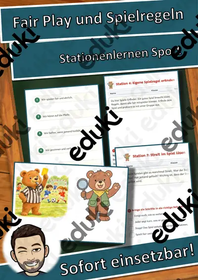

Gefühle und Freundschaft: Arbeitsblätter für Klasse 1–6 (Ethik & Werte und Normen)
Soziales Lernen steht in Grundschule und Sekundarstufe in Ethik, Religion und im Klassenrat auf dem Plan. Die Kinder lernen, Gefühle zu benennen, Streit fair zu lösen und Freundschaft zu gestalten.
Im Unterricht begegnen den Lernenden zuerst Gefühle benennen und Streit schlichten. Wer weitergeht, behandelt Freundschaft, Respekt, Mobbing sowie Toleranz.
Die Lehrpläne der Länder sehen das Thema im Fach Ethik & Werte und Normen vor, in der Regel in den Klassen 1 bis 6. Als Ziel gilt: die Kinder erkennen eigene und fremde Gefühle und finden faire Wege aus Konflikten.
Im Alltag einer Lehrkraft zählt, dass Material sofort einsatzbereit ist: Die Blätter zu Gefühle und Freundschaft greifen Streit schlichten, Freundschaft und Respekt auf, lassen sich ausdrucken und kommen mit Lösungen, damit die Vorbereitung kurz bleibt. Zur Differenzierung eignen sich die Lesespurgeschichten mit ihren drei Niveaustufen.
17 passende Materialien stehen bereit, etwa Fair Play und Spielregeln: Stationenlernen Sport, Bildkarten-Werkstatt: Gefühle und Masken-Werkstatt Gefühle-Masken. Vertreten sind 5 Lesespurgeschichten und 7 Lückentexte mit Hörverstehen; die Stufen reichen über Klasse 1–7. Ein fester Gefühlskreis zu Wochenbeginn macht das Sprechen über Gefühle zur selbstverständlichen Routine.
Das gehört zum Thema
Passende Arbeitsblätter und Materialpakete

Streit schlichten – wir finden eine Lösung – Lesespurgeschichte mit Rätselaufgaben (Klasse 3)

Fair spielen – gewinnen und verlieren lernen – Lesespurgeschichte mit Rätselaufgaben (Klasse 1)

Fair teilen und abgeben – Lesespurgeschichte mit Rätselaufgaben (Klasse 1)

Streit und Konflikte fair lösen – Lesespurgeschichte mit Rätselaufgaben (Klasse 7)

Gefühle verstehen und zeigen – Lesespurgeschichte mit Rätselaufgaben (Klasse 3)

Toleranz Lückentext mit Wortspeicher Hörverstehen und Suchsel

Respekt Lückentext mit Wortspeicher Hörverstehen und Suchsel

Freundschaft Lückentext mit Wortspeicher Hörverstehen und Suchsel

Gefühl Lückentext mit Wortspeicher Hörverstehen und Suchsel

Fairer Handel Lückentext mit Wortspeicher Hörverstehen und Suchsel

Angst Lückentext mit Wortspeicher Hörverstehen und Suchsel

Mobbing Lückentext mit Wortspeicher Hörverstehen und Suchsel

Fair Play und Spielregeln: Stationenlernen Sport

Bildkarten-Werkstatt: Gefühle – Merkspiel mit Bild- und Wortkarten (GRATIS), Klasse 1–3

Bildkarten-Werkstatt: Gefühle – Bild- und Wortkarten, Satzmuster, Spiel (GRATIS), Klasse 1–3

Masken-Werkstatt Gefühle-Masken – Geometrische Gesichter in 3 Stufen (Kunst, Klasse 1–4, Vorlagen + Bausteine)

Mit Konflikten umgehen - Konfliktlösung (Tafelmaterial) - Konfliktlöser
Häufige Fragen
Für welche Klassenstufe passen die Arbeitsblätter zu Gefühle und Freundschaft?
Die 17 Materialien zu diesem Thema sind für Klasse 1–7 ausgelegt, die meisten davon für Klasse 3. Einzelne Titel lassen sich mit Anpassung auch eine Stufe darunter oder darüber einsetzen.
Welche Inhalte decken die Materialien zu Gefühle und Freundschaft ab?
Behandelt werden unter anderem Gefühle benennen, Streit schlichten, Freundschaft und Respekt. Welche Aspekte in Ihrer Klasse Vorrang haben, richtet sich nach dem Lehrplan Ihres Bundeslandes.
Wie setze ich Gefühle und Freundschaft im Unterricht ein?
Ein fester Gefühlskreis zu Wochenbeginn macht das Sprechen über Gefühle zur selbstverständlichen Routine. Danach genügt meist ein Material als Einstieg und eines zum Üben.
Mehr Material nach Fach und Klasse
- Alle Materialien Deutsch
- Arbeitsblätter Deutsch Klasse 1
- Arbeitsblätter Deutsch Klasse 2
- Arbeitsblätter Deutsch Klasse 3
- Arbeitsblätter Deutsch Klasse 4
- Arbeitsblätter Deutsch Klasse 5
- Arbeitsblätter Deutsch Klasse 6
- Unterrichtsmaterial Klasse 1
- Unterrichtsmaterial Klasse 2
- Unterrichtsmaterial Klasse 3
- Unterrichtsmaterial Klasse 4
- Unterrichtsmaterial Klasse 5
- Unterrichtsmaterial Klasse 6
Verwandte Lehrplanthemen
- Basteln, Falten und Werken (Kunst, Klasse 1–6)
- Karneval und Fasching (Sachunterricht, Klasse 1–6)
- Sport, Spiele und Bewegung (Sport, Klasse 1–8)
- Addition und Subtraktion (Mathematik, Klasse 1–4)